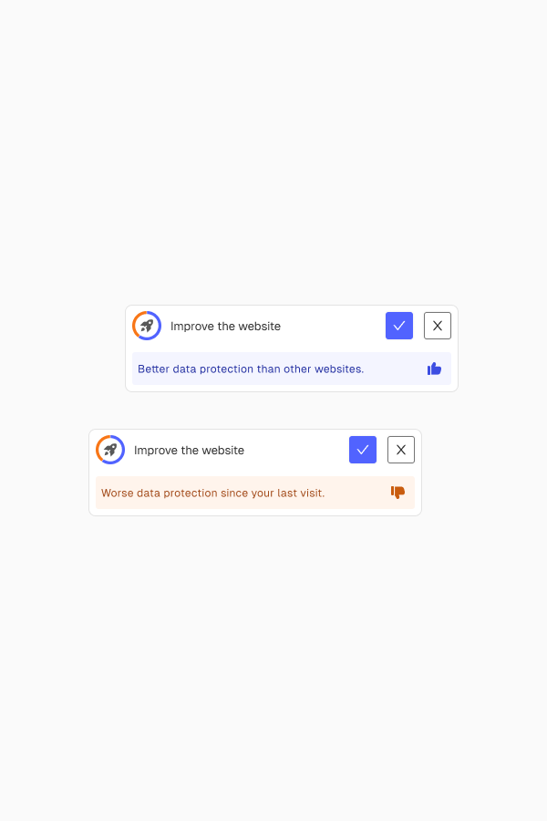
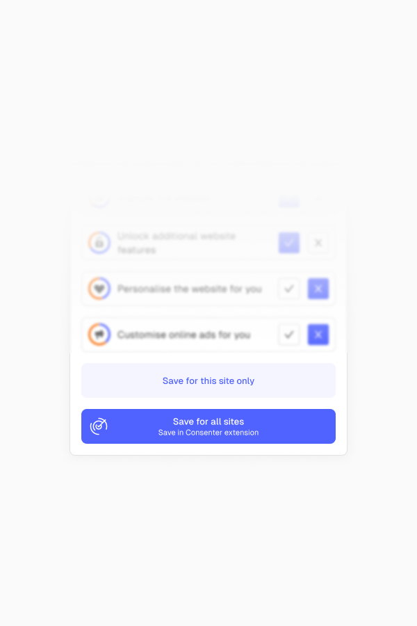

Consenter
Building a consent ecosystem from 0 to 1
Website owners set up and update consent requests in Manager. Banner uses visuals to explain how a site handles visitors’ data. Agent helps people understand their options and set preferences once for all sites.
- Role
- UX designer
- Time
- 2023–2026
- Team
- Law & Innovation
- Industry
- Data privacy and consent management
Research background
Data exposure incidents had eroded trust in Europe. At the same time, some cookie banners steered visitors toward accepting before they understood what they were agreeing to.
In earlier research, people who were wary of sharing data were more willing to consent when a specialist sat beside them and explained the purpose, benefits, and risks.
Design question
How could a website give visitors that same context at the point of choice?
Our design goals
- Education
- Understand why a site asks for data, and what the benefits and risks are.
- Transparency
- Find supporting details and know when something changes.
- Autonomy
- Decline, accept, or change a choice with comparable effort.
- Convenience
- Reduce unclear, deceptive, and repeated cookie banners.

